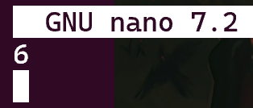
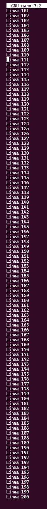
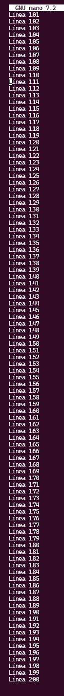
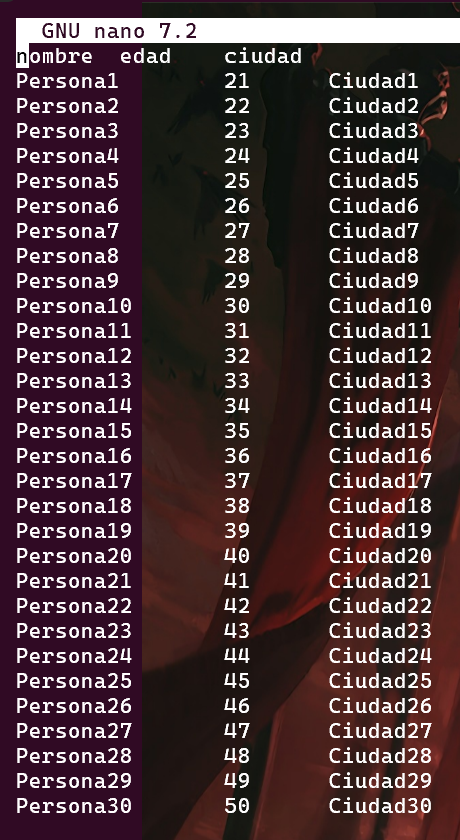
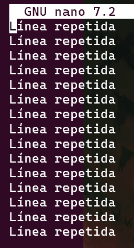
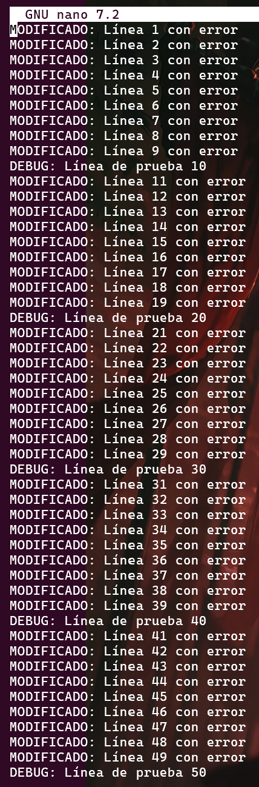
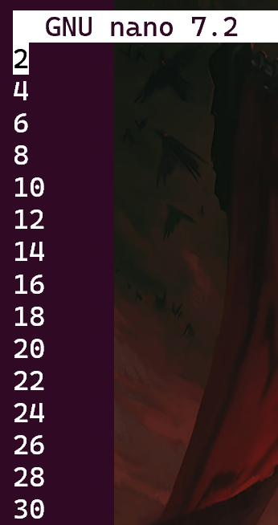
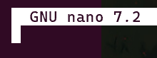
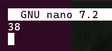

ls # Muestra los archivos no ocultos de un directorio.
ls -a # Muestra todos los archivos, inclusive los ocultos.
ls -l # Muestra los datos del archivo (tipo, cantidad de carpetas, fecha de creación, nombre).
ls -la # Funciona igual que el "ls -l", pero muestra las carpetas anteriores a esta (con . o ..).
cd directorio # Cambiar de directorio
cd # Cambia al directorio inicial.
cd .. # Retrocede al directorio anterior.
rm * # Borra todo lo que se encuentre en el directorio en el que estes situado.
rm *.extension # Borra todo lo que termine en alguna extension (.py, .c, .cpp, .css, .html, etc).
cat archivo # Mostrar contenido del archivo.
diff archivo1 archivo2 # Comparar el contenido del archivo.
diff -y archivo1 archivo2 # Mustra las diferencias entre dos archivos linea a linea.
grep "Nombre" archivo # Buscar en el contenido del archivo una palabra en específico.
grep "^Nombre" archivo # Busca la las lineas del archivo que empiezan por esa palabra.
grep "Nombre$" archivo # Busca la las lineas del archivo que terminan por esa palabra.
grep "^$" archivo # Busca las lineas vacias.
find . -type d # Busca recursivamente en el directorio en el que estes los subdirectorios
comando --help # la ayuda del comando
man comando # Manual de un comando.
head archivo # Te muestra el principio de un archivo.
head -n 2 archivo # Te muestra las dos primeras lineas de un archivo (el número puede variar dependiendo de las líneas que quieras selecionar).
tail archivo # Te muestra el final de un archivo.
tail -n 19 # Muestra las 19 últimas líneas.
less archivo # Te permite irte moviendo por el archivo si es muy grande.
cat archivo | grep "Nombre$" # Ejemplo de concatenaciónon de comandos.
grep "error" file1.txt | wc --word < archivo # Concatenar y crear archivo con el contenido de la salida de los comandos.
sed 's/Palabra a remplazar/Remplazo/g' archivo # Reemplaza una palabra por otra de un archivo.
sed '/^$/d' archivo # Borra las líneas vacias
sed '/^$/d' | uniq archivo # Borra dos lineas seguidas que esten vacias
sed '/^$/d' archivo | sort | uniq # Ordenas y borras las lineas vacias que esten seguidas
sed '5,95d' archivo # Borra las lineas que hay entre las lineas 5 y 95 del archivo.
wc -w archivo # Cuenta la cantidad de palabras que hay en un archivo.
wc -l archivo # Cuenta la cantidad de líneas.
sort archivo # Ordena alfabeticamente las líneas del archivo.
sort -b archivo # Cuentas las líneas de un archivo, ignorando los espacios en blanco
uniq archivo # Borra las líneas duplicadas del archivo.
uniq -D archivo # Muestra las líneas duplicadas.
pwd # Ruta entera de donde te encuetras.
archivo1 > archivo2 # Pasa la informacion del archivo1 al archivo2 (sobreescribe).
archivo3 >> archivo2 # Añade la informacion del archivo3 al archivo2 (a continuación))
file1.txt y guarda el resultado en output1.txt.grep "error" file1.txt > output1.txt
file1.txt y guarda el resultado en output2.txt.sed 's/DEBUG/INFO/g' file1.txt > output2.txt

file1.txt que contengan "ERROR" y guarda el resultado en output3.txt.head -n 5 file1.txt | grep "error" > output3.txt

.txt en el directorio actual y guarda el resultado en output4.txt.ls *.txt | wc -l > output4.txt

file1.txt alfabéticamente, elimina duplicados, y guarda el resultado en output5.txt.sort file1.txt | uniq > output5.txt

file6_large.txt en dos archivos: uno con las primeras 100 líneas (out6.1.txt) y otro con el resto (out.6.txt).head -n 100 file6_large.txt > out6.1.txt | sed '1,100d' file6_large.txt > out.6.txt
 

file4.txt y guarda el resultado en output7.txt.sed '/^$/d' file4.txt | uniq > output7.txt

file2.csv y guarda el resultado en output8.csv.sed 's/','/\t/g' file2.csv > output8.csv

file5.txt y guarda el resultado en output9.txt.sed '/^[aeiouAEIOU]/s/^/INICIO:/' file5.txt > output9.txt

file1.txt contienen la palabra "ERROR" y guarda el resultado en output10.txt.grep "error" file1.txt | wc -l > output10.txt

output11.txt.ls *.* -A | wc -l > output11.txt

file7_duplicates.txt, muestra cuántas veces se repiten, y guarda el resultado en output12.txt.uniq -D file7_duplicates.txt > output12.txt

file6_large.txt y guarda el resultado en output13.txt.head -n 100 file6_large.txt > output13.txt

file1.txt y guarda el resultado en output14.txt.grep '[0-9]' file1.txt > output14.txt

file2.csv en un archivo delimitado por punto y coma y guarda el resultado en output15.csv.sed 's/$/;/g' file2.csv > output15.csv

file1.txt y guarda el resultado en output16.txt.sed '/error/s/^/MODIFICADO: /' file1.txt > output16.txt

file3.txt que contengan números pares y guarda el resultado en output17.txt.grep [02468]$ file3.txt > output17.txt

output18.txt.grep -r "error" ./sub* > output18.txt

file6_large.txt y guarda el resultado en output19.txt.tail -n 50 file6_large.txt > output19.txt

output20.txt.find | wc -l > output20.txt
